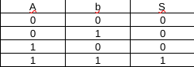
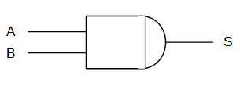
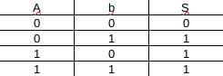
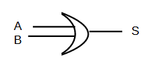
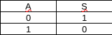
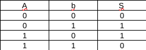
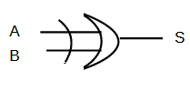
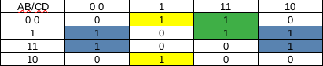

Notion d'électronique logique
Sommaire
Introduction
Notation d'opérateur
Théorème
Table de Karnaugh
Introduction
George Boole (1815-1864),logicien, mathématicien et philosophe britannique, est à l'origine de l'algèbre de Boole. En électronique, on utilise l'algèbre de Boole avec deux états logique pour représenter les circuits. Le premier état est représenté par un 1 et indique que le courant passe, le deuxième est représenté par un 0 et indique que le courant ne passe pas.
Notation d'opérateur
Opérateur ET (AND):
Le ET logique renvoie un 1 si l'ensemble de ses entrées sont à 1. Le ET à généralement deux entrées mais peut en avoir plus. Il est représenté par le symbole ".".


Opérateur OU (OR):
Le OU logique renvoie un 1 si au moins une de ses entrées est à 1. Le OU à généralement deux entrées mais peut en avoir plus.Il est représenté par le symbole "+".


L'inversion logique (NOT):
Le NOT logique inverse la valeur qu'il reçois en entré, il reçois une seule valeur. Il peut être représenté par le symbole "!" ou par une barre au-dessus de la partie de l'expréssion corespondante.


Le OU exclusif (XOR):
Le OU exclusif logique renvoie un 1 si il y a uniquement une entrée à 1. Le OU exclusif à généralement deux entrées mais peut en avoir plus.Il est représenté par le symbole "*".


Théorème et propriétés booléennes
Propriétés des OU et des ET logique:
Idempotence:
Pour le OU: A+A=A
Pour le ET: A.A=A
Commutativité:
Pour le OU: A+B=B+A
Pour le ET: A.B=B.A
Associativité:
Pour le OU: A+(B+C)=(A+B)+C=(A+C)+B
Pour le ET: A.(B.C)=(A.B).C=(A.C).B
Elément neutre:
Pour le OU: A+0=A
Pour le ET: A.1=A
Complémentarité:
Pour le OU: A+!A=1
Pour le ET: A.!A=0
Elément absorbant:
Pour le OU: A+1=1
Pour le ET: A.0=0
Propriétés générales:
Involution:
!(!A)=A
Distributivité:
A.(B+C)=A.B+A.C
A+(B.C)=(A+B).(A+C)
Absorption:
A+A.B=A
A.(A+B)=A
A+!A.B=A+B
Théorème de "de Morgant":
!(A.B)=!A+!B
!(A+B)=!A.!B
Table de Karnaugh
La table de Karnaugh est une méthode de réduction d'une équation logique. Cette méthode consiste a ordoner une table de véritée pour mettre en évidence les simplifications.Il faut faire un tableau en répartissant la moitié des entrées sur l'axe des abscisse et l'autre moitié sur l'axe des ordonnées puis reporter les 1 et les 0 dans les bonnes case.La table de Karnaugh étant circulaire, il faut qu'il y est une différence de un bit entre chaque colonnes/ligne adjacentes. Il faut réunire les 1 dans des groupe de la plus grande puissance de 2 possible, pour cela les 1 doivent formmer un rectangle, comme la table est circulaire on peut relier la première colonne/ligne avec la dernière.
